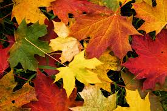
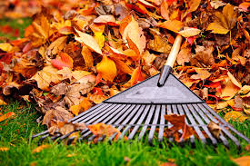
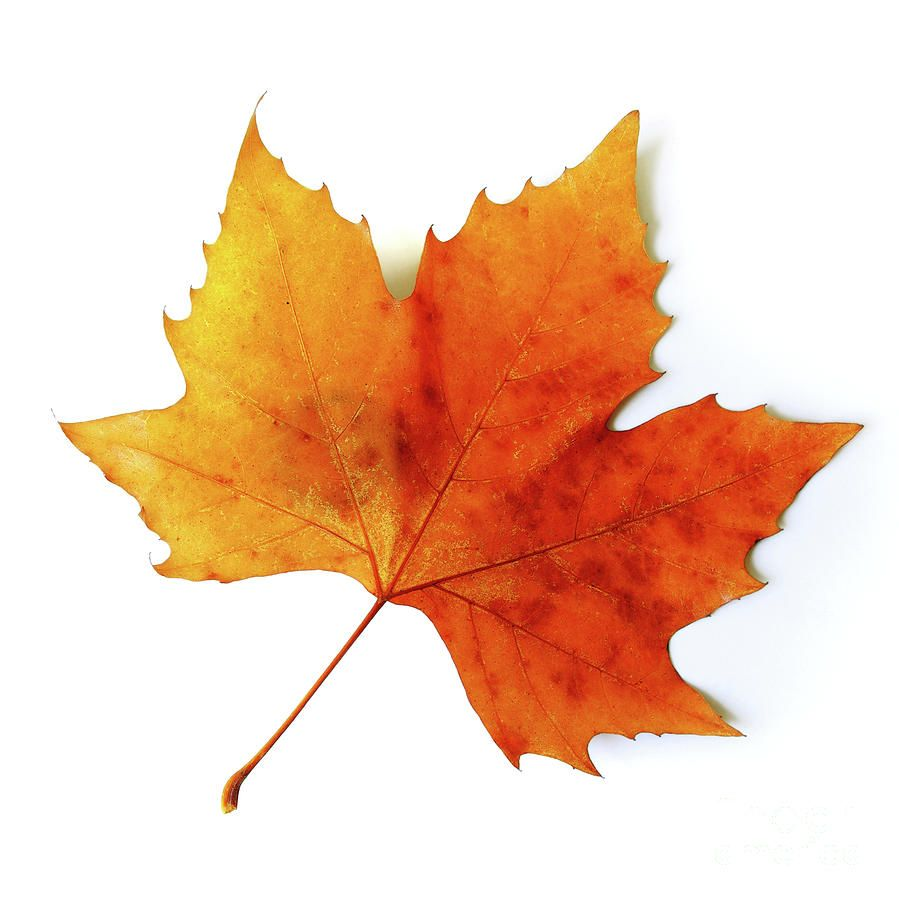

|
Trees give us life directly and indirectly as they are source of oxygen production, CO2 consumption and source of rain. They are most precious gift to the humanity on the earth from nature for which we must be grateful, give honour and preserve for the mankind wellness. We should understand importance of trees in our lives and do our best to save trees in order to save life, save environment on the earth and make earth a green earth. Trees are as valuable as gold that’s why they are called as “Green Gold” on the earth. They are the real source of our health as well as wealth because they give us oxygen, cool air, fruits, spices, vegetables, medicines, water, wood, furniture, shadow, fuel to burn, houses, fodder to animals and other useful things. They consume all the CO2, refresh air from toxic gases and prevent us from the air pollution. Save trees, save life is not only a slogan, it is a responsibility which should be followed by each and every person living on the earth. It is a big opportunity to all of us to save our healthy environment and green earth by saving trees. Trees are symbol of life on the earth and natural home for many people and wild animals. Saving trees have been must at any cost in such a modern world where urbanization, industrialization and global warming is going very fast. In such a technological world, where people are fighting and working for themselves only, only trees are living for benefiting others (human beings and animals). |
   |